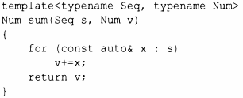

⇐7.1 Введение 7.2.1 Применение концептов⇒
Рассмотрим функцию sum() из §6.3.1:
Она может быть вызвана для любой структуры данных, которая поддерживает функции begin() и end(),так, чтобы работал цикл for для диапазона. Такие структуры включают, например, vector, list и map стандартной библиотеки. Кроме того, тип элемента структуры данных ограничен только его использованием: он должен быть типом, который мы можем сложить с аргументом Value. Примерами являются int, douЫe или Matrix (при разумном определении матрицы Matrix). Можно сказать, что алгоритм sum() является обобщенным в двух измерениях: типа структуры данных, используемой для хранения элементов ("последовательность") и типа элементов.
Итак, sum() требует, чтобы ее первый аргумент шаблона представлял собой некоторую последовательность, а второй аргумент шаблона - некоторое число. Мы называем такие требования концептами.
Языковая поддержка концептов еще не вошла в стандарт ISO С++, но в настоящее время является технической спецификацией ISO [11]. В настоящее время уже имеются используемые реализации, поэтому я рискну рекомендовать концепты в этой книге - пусть даже детали могут измениться и может пройти несколько лет до того, как каждый сможет использовать концепты в своем производственном коде.